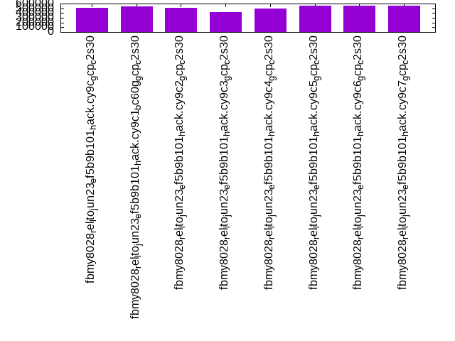
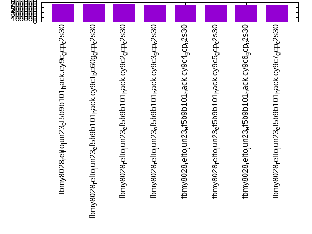

Introduction
This is a report for the insert benchmark with 160M docs and 8 client(s). It is generated by scripts (bash, awk, sed) and Tufte might not be impressed. An overview of the insert benchmark is here and a short update is here. Below, by DBMS, I mean DBMS+version.config. An example is my8020.c10b40 where my means MySQL, 8020 is version 8.0.20 and c10b40 is the name for the configuration file.
The test server is a c2-standard-30 from GCP with 15 cores, hyperthreads disabled, 120G RAM, XFS + SW RAID 0 on 4 NVMe devices (1.5TB). The benchmark was run with 8 client and there were 1 or 3 connections per client (1 for queries or inserts without rate limits, 1+1 for rate limited inserts+deletes). There are 8 tables, client per table. It loads 20M rows per table without secondary indexes, creates secondary indexes, then inserts 50M rows with a delete per insert to avoid growing the table. It then does 3 read+write tests for 3600s each that do queries as fast as possible with 100, 500 and then 1000 inserts/second/client concurrent with the queries and 1000 deletes/second to avoid growing the table. The database is cached by MyRocks and the only IO is for writes.
The tested DBMS are:
- fbmy8028_rel_lto_jun23_ef5b9b101_hack.cy9c_gcp_c2s30 - MyRocks and FB MySQL 8.0.28 from git ef5b9b101 (June 2023), rel_lto build, cy9c_gcp_c2s30 config, has rocksdb_block_cache_size=80G
- fbmy8028_rel_lto_jun23_ef5b9b101_hack.cy9c1_bc60g_gcp_c2s30 - MyRocks and FB MySQL 8.0.28 from git ef5b9b101 (June 2023), rel_lto build, cy9c1_gcp_c2s30 config, adds rocksdb_use_hyper_clock_cache=ON, reduces rocksdb_block_cache_size to 60G
- fbmy8028_rel_lto_jun23_ef5b9b101_hack.cy9c2_gcp_c2s30 - MyRocks and FB MySQL 8.0.28 from git ef5b9b101 (June 2023), rel_lto build, cy9c2_gcp_c2s30 config, adds rocksdb_block_cache_numshardbits=4 (was 6)
- fbmy8028_rel_lto_jun23_ef5b9b101_hack.cy9c3_gcp_c2s30 - MyRocks and FB MySQL 8.0.28 from git ef5b9b101 (June 2023), rel_lto build, cy9c3_gcp_c2s30 config, adds rocksdb_min_blob_size (via hack this disables intra-L0 compaction)
- fbmy8028_rel_lto_jun23_ef5b9b101_hack.cy9c4_gcp_c2s30 - MyRocks and FB MySQL 8.0.28 from git ef5b9b101 (June 2023), rel_lto build, cy9c4_gcp_c2s30 config, reduces level0_slowdown_writes_trigger from 20 to 8, reduces level0_stop_writes_trigger from 36 to 12
- fbmy8028_rel_lto_jun23_ef5b9b101_hack.cy9c5_gcp_c2s30 - MyRocks and FB MySQL 8.0.28 from git ef5b9b101 (June 2023), rel_lto build, cy9c5_gcp_c2s30 config, adds rocksdb_max_subcompactions=4 (was 1)
- fbmy8028_rel_lto_jun23_ef5b9b101_hack.cy9c6_gcp_c2s30 - MyRocks and FB MySQL 8.0.28 from git ef5b9b101 (June 2023), rel_lto build, cy9c6_gcp_c2s30 config, combines c1, c2, c5
- fbmy8028_rel_lto_jun23_ef5b9b101_hack.cy9c7_gcp_c2s30 - MyRocks and FB MySQL 8.0.28 from git ef5b9b101 (June 2023), rel_lto build, cy9c7_gcp_c2s30 config, combines c1, c5
Contents
- Summary
- l.i0: load without secondary indexes
- l.x: create secondary indexes
- l.i1: continue load after secondary indexes created
- q100.1: range queries with 100 insert/s per client
- q500.1: range queries with 500 insert/s per client
- q1000.1: range queries with 1000 insert/s per client
Summary
The numbers are inserts/s for l.i0 and l.i1, indexed docs (or rows) /s for l.x and queries/s for q*.2. The values are the average rate over the entire test for inserts (IPS) and queries (QPS). The range of values for IPS and QPS is split into 3 parts: bottom 25%, middle 50%, top 25%. Values in the bottom 25% have a red background, values in the top 25% have a green background and values in the middle have no color. A gray background is used for values that can be ignored because the DBMS did not sustain the target insert rate. Red backgrounds are not used when the minimum value is within 80% of the max value.
| dbms | l.i0 | l.x | l.i1 | q100.1 | q500.1 | q1000.1 |
|---|---|---|---|---|---|---|
| fbmy8028_rel_lto_jun23_ef5b9b101_hack.cy9c_gcp_c2s30 | 509554 | 714732 | 94051 | 42559 | 40689 | 38792 |
| fbmy8028_rel_lto_jun23_ef5b9b101_hack.cy9c1_bc60g_gcp_c2s30 | 536913 | 714732 | 92614 | 44018 | 42705 | 40812 |
| fbmy8028_rel_lto_jun23_ef5b9b101_hack.cy9c2_gcp_c2s30 | 509554 | 711556 | 91282 | 41520 | 39964 | 38332 |
| fbmy8028_rel_lto_jun23_ef5b9b101_hack.cy9c3_gcp_c2s30 | 423280 | 696087 | 40205 | 42555 | 40916 | 38968 |
| fbmy8028_rel_lto_jun23_ef5b9b101_hack.cy9c4_gcp_c2s30 | 492308 | 708407 | 60178 | 42797 | 40839 | 38831 |
| fbmy8028_rel_lto_jun23_ef5b9b101_hack.cy9c5_gcp_c2s30 | 549828 | 708407 | 94007 | 42543 | 40718 | 39006 |
| fbmy8028_rel_lto_jun23_ef5b9b101_hack.cy9c6_gcp_c2s30 | 561404 | 708407 | 93175 | 44162 | 42925 | 41023 |
| fbmy8028_rel_lto_jun23_ef5b9b101_hack.cy9c7_gcp_c2s30 | 549828 | 699127 | 92764 | 43884 | 42504 | 40615 |
This table has relative throughput, throughput for the DBMS relative to the DBMS in the first line, using the absolute throughput from the previous table. Values less than 0.95 have a yellow background. Values greater than 1.05 have a blue background.
| dbms | l.i0 | l.x | l.i1 | q100.1 | q500.1 | q1000.1 |
|---|---|---|---|---|---|---|
| fbmy8028_rel_lto_jun23_ef5b9b101_hack.cy9c_gcp_c2s30 | 1.00 | 1.00 | 1.00 | 1.00 | 1.00 | 1.00 |
| fbmy8028_rel_lto_jun23_ef5b9b101_hack.cy9c1_bc60g_gcp_c2s30 | 1.05 | 1.00 | 0.98 | 1.03 | 1.05 | 1.05 |
| fbmy8028_rel_lto_jun23_ef5b9b101_hack.cy9c2_gcp_c2s30 | 1.00 | 1.00 | 0.97 | 0.98 | 0.98 | 0.99 |
| fbmy8028_rel_lto_jun23_ef5b9b101_hack.cy9c3_gcp_c2s30 | 0.83 | 0.97 | 0.43 | 1.00 | 1.01 | 1.00 |
| fbmy8028_rel_lto_jun23_ef5b9b101_hack.cy9c4_gcp_c2s30 | 0.97 | 0.99 | 0.64 | 1.01 | 1.00 | 1.00 |
| fbmy8028_rel_lto_jun23_ef5b9b101_hack.cy9c5_gcp_c2s30 | 1.08 | 0.99 | 1.00 | 1.00 | 1.00 | 1.01 |
| fbmy8028_rel_lto_jun23_ef5b9b101_hack.cy9c6_gcp_c2s30 | 1.10 | 0.99 | 0.99 | 1.04 | 1.05 | 1.06 |
| fbmy8028_rel_lto_jun23_ef5b9b101_hack.cy9c7_gcp_c2s30 | 1.08 | 0.98 | 0.99 | 1.03 | 1.04 | 1.05 |
This lists the average rate of inserts/s for the tests that do inserts concurrent with queries. For such tests the query rate is listed in the table above. The read+write tests are setup so that the insert rate should match the target rate every second. Cells that are not at least 95% of the target have a red background to indicate a failure to satisfy the target.
| dbms | q100.1 | q500.1 | q1000.1 |
|---|---|---|---|
| fbmy8028_rel_lto_jun23_ef5b9b101_hack.cy9c_gcp_c2s30 | 797 | 3987 | 7973 |
| fbmy8028_rel_lto_jun23_ef5b9b101_hack.cy9c1_bc60g_gcp_c2s30 | 797 | 3987 | 7976 |
| fbmy8028_rel_lto_jun23_ef5b9b101_hack.cy9c2_gcp_c2s30 | 797 | 3987 | 7976 |
| fbmy8028_rel_lto_jun23_ef5b9b101_hack.cy9c3_gcp_c2s30 | 797 | 3987 | 7976 |
| fbmy8028_rel_lto_jun23_ef5b9b101_hack.cy9c4_gcp_c2s30 | 797 | 3988 | 7973 |
| fbmy8028_rel_lto_jun23_ef5b9b101_hack.cy9c5_gcp_c2s30 | 797 | 3988 | 7976 |
| fbmy8028_rel_lto_jun23_ef5b9b101_hack.cy9c6_gcp_c2s30 | 797 | 3987 | 7973 |
| fbmy8028_rel_lto_jun23_ef5b9b101_hack.cy9c7_gcp_c2s30 | 797 | 3987 | 7976 |
| target | 800 | 4000 | 8000 |
l.i0
l.i0: load without secondary indexes. Graphs for performance per 1-second interval are here.
Average throughput:
Insert response time histogram: each cell has the percentage of responses that take <= the time in the header and max is the max response time in seconds. For the max column values in the top 25% of the range have a red background and in the bottom 25% of the range have a green background. The red background is not used when the min value is within 80% of the max value.
| dbms | 256us | 1ms | 4ms | 16ms | 64ms | 256ms | 1s | 4s | 16s | gt | max |
|---|---|---|---|---|---|---|---|---|---|---|---|
| fbmy8028_rel_lto_jun23_ef5b9b101_hack.cy9c_gcp_c2s30 | 11.013 | 88.814 | 0.152 | 0.006 | 0.015 | 0.001 | 0.313 | ||||
| fbmy8028_rel_lto_jun23_ef5b9b101_hack.cy9c1_bc60g_gcp_c2s30 | 10.891 | 88.945 | 0.141 | 0.008 | 0.013 | 0.001 | 0.295 | ||||
| fbmy8028_rel_lto_jun23_ef5b9b101_hack.cy9c2_gcp_c2s30 | 11.737 | 88.087 | 0.157 | 0.005 | 0.014 | 0.240 | |||||
| fbmy8028_rel_lto_jun23_ef5b9b101_hack.cy9c3_gcp_c2s30 | 10.647 | 85.543 | 3.653 | 0.143 | 0.014 | 0.235 | |||||
| fbmy8028_rel_lto_jun23_ef5b9b101_hack.cy9c4_gcp_c2s30 | 10.720 | 87.909 | 1.353 | 0.004 | 0.013 | 0.001 | 0.420 | ||||
| fbmy8028_rel_lto_jun23_ef5b9b101_hack.cy9c5_gcp_c2s30 | 9.972 | 89.869 | 0.136 | 0.008 | 0.013 | 0.001 | 0.359 | ||||
| fbmy8028_rel_lto_jun23_ef5b9b101_hack.cy9c6_gcp_c2s30 | 10.039 | 89.800 | 0.137 | 0.009 | 0.014 | 0.001 | 0.387 | ||||
| fbmy8028_rel_lto_jun23_ef5b9b101_hack.cy9c7_gcp_c2s30 | 9.460 | 90.374 | 0.143 | 0.006 | 0.016 | nonzero | 0.264 |
Performance metrics for the DBMS listed above. Some are normalized by throughput, others are not. Legend for results is here.
ips qps rps rmbps wps wmbps rpq rkbpq wpi wkbpi csps cpups cspq cpupq dbgb1 dbgb2 rss maxop p50 p99 tag 509554 0 0 0.0 443.2 137.2 0.000 0.000 0.001 0.276 65785 70.6 0.129 21 5.0 6.7 1.7 0.313 67751 51044 160m.fbmy8028_rel_lto_jun23_ef5b9b101_hack.cy9c_gcp_c2s30 536913 0 0 0.0 470.6 142.9 0.000 0.000 0.001 0.273 62247 71.9 0.116 20 5.1 6.8 2.8 0.295 70727 52044 160m.fbmy8028_rel_lto_jun23_ef5b9b101_hack.cy9c1_bc60g_gcp_c2s30 509554 0 0 0.0 435.4 130.8 0.000 0.000 0.001 0.263 70356 70.2 0.138 21 5.1 6.8 1.7 0.240 66528 50940 160m.fbmy8028_rel_lto_jun23_ef5b9b101_hack.cy9c2_gcp_c2s30 423280 0 0 0.0 409.6 128.7 0.000 0.000 0.001 0.311 51083 59.9 0.121 21 5.8 7.5 1.9 0.235 63953 6495 160m.fbmy8028_rel_lto_jun23_ef5b9b101_hack.cy9c3_gcp_c2s30 492308 0 0 0.0 423.3 125.6 0.000 0.000 0.001 0.261 61996 65.4 0.126 20 5.1 6.8 1.8 0.420 68625 22476 160m.fbmy8028_rel_lto_jun23_ef5b9b101_hack.cy9c4_gcp_c2s30 549828 0 0 0.0 464.4 130.7 0.000 0.000 0.001 0.243 63442 71.4 0.115 19 5.1 6.8 1.5 0.359 74119 54541 160m.fbmy8028_rel_lto_jun23_ef5b9b101_hack.cy9c5_gcp_c2s30 561404 0 0 0.0 491.6 132.6 0.000 0.000 0.001 0.242 63996 72.2 0.114 19 5.1 6.8 2.6 0.387 76117 58036 160m.fbmy8028_rel_lto_jun23_ef5b9b101_hack.cy9c6_gcp_c2s30 549828 0 0 0.0 483.5 129.3 0.000 0.000 0.001 0.241 63030 72.2 0.115 20 5.1 6.8 2.6 0.264 75054 53541 160m.fbmy8028_rel_lto_jun23_ef5b9b101_hack.cy9c7_gcp_c2s30
l.x
l.x: create secondary indexes.
Average throughput:
Performance metrics for the DBMS listed above. Some are normalized by throughput, others are not. Legend for results is here.
ips qps rps rmbps wps wmbps rpq rkbpq wpi wkbpi csps cpups cspq cpupq dbgb1 dbgb2 rss maxop p50 p99 tag 714732 0 1 0.1 257.4 95.5 0.000 0.000 0.000 0.137 1364 49.2 0.002 10 10.8 12.5 13.5 0.003 NA NA 160m.fbmy8028_rel_lto_jun23_ef5b9b101_hack.cy9c_gcp_c2s30 714732 0 1 0.0 255.2 94.7 0.000 0.000 0.000 0.136 1251 49.4 0.002 10 10.9 12.6 14.7 0.002 NA NA 160m.fbmy8028_rel_lto_jun23_ef5b9b101_hack.cy9c1_bc60g_gcp_c2s30 711556 0 1 0.1 256.2 94.2 0.000 0.000 0.000 0.136 1374 48.6 0.002 10 10.9 12.6 13.4 0.002 NA NA 160m.fbmy8028_rel_lto_jun23_ef5b9b101_hack.cy9c2_gcp_c2s30 696087 0 1 0.1 272.7 95.2 0.000 0.000 0.000 0.140 1385 48.7 0.002 10 10.8 12.5 15.7 0.003 NA NA 160m.fbmy8028_rel_lto_jun23_ef5b9b101_hack.cy9c3_gcp_c2s30 708407 0 1 0.1 256.1 95.0 0.000 0.000 0.000 0.137 1256 48.7 0.002 10 10.8 12.5 13.7 0.002 NA NA 160m.fbmy8028_rel_lto_jun23_ef5b9b101_hack.cy9c4_gcp_c2s30 708407 0 1 0.1 255.8 94.6 0.000 0.000 0.000 0.137 1438 48.9 0.002 10 10.9 12.6 13.4 0.002 NA NA 160m.fbmy8028_rel_lto_jun23_ef5b9b101_hack.cy9c5_gcp_c2s30 708407 0 1 0.1 258.4 96.9 0.000 0.000 0.000 0.140 1271 49.1 0.002 10 10.8 12.4 14.6 0.002 NA NA 160m.fbmy8028_rel_lto_jun23_ef5b9b101_hack.cy9c6_gcp_c2s30 699127 0 1 0.1 254.6 92.6 0.000 0.000 0.000 0.136 1348 48.2 0.002 10 10.9 12.5 14.4 0.002 NA NA 160m.fbmy8028_rel_lto_jun23_ef5b9b101_hack.cy9c7_gcp_c2s30
l.i1
l.i1: continue load after secondary indexes created. Graphs for performance per 1-second interval are here.
Average throughput:
Insert response time histogram: each cell has the percentage of responses that take <= the time in the header and max is the max response time in seconds. For the max column values in the top 25% of the range have a red background and in the bottom 25% of the range have a green background. The red background is not used when the min value is within 80% of the max value.
| dbms | 256us | 1ms | 4ms | 16ms | 64ms | 256ms | 1s | 4s | 16s | gt | max |
|---|---|---|---|---|---|---|---|---|---|---|---|
| fbmy8028_rel_lto_jun23_ef5b9b101_hack.cy9c_gcp_c2s30 | 0.015 | 46.629 | 53.212 | 0.124 | 0.017 | 0.002 | 0.725 | ||||
| fbmy8028_rel_lto_jun23_ef5b9b101_hack.cy9c1_bc60g_gcp_c2s30 | 0.010 | 47.065 | 52.675 | 0.230 | 0.018 | 0.002 | 0.651 | ||||
| fbmy8028_rel_lto_jun23_ef5b9b101_hack.cy9c2_gcp_c2s30 | 0.006 | 46.782 | 52.866 | 0.327 | 0.017 | 0.002 | 0.732 | ||||
| fbmy8028_rel_lto_jun23_ef5b9b101_hack.cy9c3_gcp_c2s30 | 0.012 | 48.986 | 44.151 | 1.843 | 4.996 | 0.012 | 0.699 | ||||
| fbmy8028_rel_lto_jun23_ef5b9b101_hack.cy9c4_gcp_c2s30 | 0.013 | 43.496 | 46.817 | 9.540 | 0.134 | nonzero | 0.389 | ||||
| fbmy8028_rel_lto_jun23_ef5b9b101_hack.cy9c5_gcp_c2s30 | 0.022 | 44.729 | 55.150 | 0.081 | 0.015 | 0.001 | 0.360 | ||||
| fbmy8028_rel_lto_jun23_ef5b9b101_hack.cy9c6_gcp_c2s30 | 0.026 | 41.296 | 58.584 | 0.077 | 0.016 | 0.001 | 0.396 | ||||
| fbmy8028_rel_lto_jun23_ef5b9b101_hack.cy9c7_gcp_c2s30 | 0.025 | 41.186 | 58.698 | 0.076 | 0.015 | 0.001 | 0.436 |
Delete response time histogram: each cell has the percentage of responses that take <= the time in the header and max is the max response time in seconds. For the max column values in the top 25% of the range have a red background and in the bottom 25% of the range have a green background. The red background is not used when the min value is within 80% of the max value.
| dbms | 256us | 1ms | 4ms | 16ms | 64ms | 256ms | 1s | 4s | 16s | gt | max |
|---|---|---|---|---|---|---|---|---|---|---|---|
| fbmy8028_rel_lto_jun23_ef5b9b101_hack.cy9c_gcp_c2s30 | 0.016 | 43.429 | 56.407 | 0.128 | 0.017 | 0.002 | 0.724 | ||||
| fbmy8028_rel_lto_jun23_ef5b9b101_hack.cy9c1_bc60g_gcp_c2s30 | 0.014 | 45.337 | 54.396 | 0.232 | 0.018 | 0.002 | 0.649 | ||||
| fbmy8028_rel_lto_jun23_ef5b9b101_hack.cy9c2_gcp_c2s30 | 0.010 | 40.852 | 58.778 | 0.340 | 0.017 | 0.002 | 0.732 | ||||
| fbmy8028_rel_lto_jun23_ef5b9b101_hack.cy9c3_gcp_c2s30 | 0.012 | 48.489 | 44.647 | 1.843 | 4.998 | 0.012 | 0.698 | ||||
| fbmy8028_rel_lto_jun23_ef5b9b101_hack.cy9c4_gcp_c2s30 | 0.017 | 47.274 | 43.079 | 9.496 | 0.134 | nonzero | 0.389 | ||||
| fbmy8028_rel_lto_jun23_ef5b9b101_hack.cy9c5_gcp_c2s30 | 0.024 | 46.416 | 53.464 | 0.080 | 0.015 | 0.001 | 0.361 | ||||
| fbmy8028_rel_lto_jun23_ef5b9b101_hack.cy9c6_gcp_c2s30 | 0.033 | 43.907 | 55.969 | 0.074 | 0.016 | 0.001 | 0.394 | ||||
| fbmy8028_rel_lto_jun23_ef5b9b101_hack.cy9c7_gcp_c2s30 | 0.028 | 43.489 | 56.392 | 0.074 | 0.015 | 0.001 | 0.436 |
Performance metrics for the DBMS listed above. Some are normalized by throughput, others are not. Legend for results is here.
ips qps rps rmbps wps wmbps rpq rkbpq wpi wkbpi csps cpups cspq cpupq dbgb1 dbgb2 rss maxop p50 p99 tag 94051 0 3 1.3 477.1 126.2 0.000 0.014 0.005 1.374 74446 65.3 0.792 104 15.8 17.3 51.3 0.725 12140 6493 160m.fbmy8028_rel_lto_jun23_ef5b9b101_hack.cy9c_gcp_c2s30 92614 0 3 1.3 461.3 125.3 0.000 0.014 0.005 1.386 53975 59.9 0.583 97 25.1 26.6 52.5 0.651 12187 4146 160m.fbmy8028_rel_lto_jun23_ef5b9b101_hack.cy9c1_bc60g_gcp_c2s30 91282 0 3 1.3 462.6 124.4 0.000 0.014 0.005 1.396 122402 66.9 1.341 110 18.5 20.1 51.6 0.732 11887 3196 160m.fbmy8028_rel_lto_jun23_ef5b9b101_hack.cy9c2_gcp_c2s30 40205 0 1 0.6 242.4 71.2 0.000 0.014 0.006 1.812 26666 27.5 0.663 103 13.6 15.1 64.9 0.699 749 250 160m.fbmy8028_rel_lto_jun23_ef5b9b101_hack.cy9c3_gcp_c2s30 60178 0 2 0.8 370.7 101.5 0.000 0.014 0.006 1.728 42398 42.1 0.705 105 13.4 14.9 56.1 0.389 8691 849 160m.fbmy8028_rel_lto_jun23_ef5b9b101_hack.cy9c4_gcp_c2s30 94007 0 3 1.3 556.4 156.7 0.000 0.014 0.006 1.707 56565 63.5 0.602 101 13.2 14.7 57.5 0.360 11943 8744 160m.fbmy8028_rel_lto_jun23_ef5b9b101_hack.cy9c5_gcp_c2s30 93175 0 3 1.3 541.9 151.8 0.000 0.014 0.006 1.668 54018 61.1 0.580 98 13.4 14.9 57.5 0.396 11887 8648 160m.fbmy8028_rel_lto_jun23_ef5b9b101_hack.cy9c6_gcp_c2s30 92764 0 3 1.3 539.5 150.8 0.000 0.014 0.006 1.665 53055 62.3 0.572 101 15.6 17.1 57.0 0.436 11824 8640 160m.fbmy8028_rel_lto_jun23_ef5b9b101_hack.cy9c7_gcp_c2s30
q100.1
q100.1: range queries with 100 insert/s per client. Graphs for performance per 1-second interval are here.
Average throughput:
Query response time histogram: each cell has the percentage of responses that take <= the time in the header and max is the max response time in seconds. For max values in the top 25% of the range have a red background and in the bottom 25% of the range have a green background. The red background is not used when the min value is within 80% of the max value.
| dbms | 256us | 1ms | 4ms | 16ms | 64ms | 256ms | 1s | 4s | 16s | gt | max |
|---|---|---|---|---|---|---|---|---|---|---|---|
| fbmy8028_rel_lto_jun23_ef5b9b101_hack.cy9c_gcp_c2s30 | 98.527 | 1.472 | 0.001 | nonzero | nonzero | 0.039 | |||||
| fbmy8028_rel_lto_jun23_ef5b9b101_hack.cy9c1_bc60g_gcp_c2s30 | 98.823 | 1.176 | 0.001 | nonzero | 0.014 | ||||||
| fbmy8028_rel_lto_jun23_ef5b9b101_hack.cy9c2_gcp_c2s30 | 98.573 | 1.427 | 0.001 | nonzero | nonzero | nonzero | 0.069 | ||||
| fbmy8028_rel_lto_jun23_ef5b9b101_hack.cy9c3_gcp_c2s30 | 99.080 | 0.918 | 0.001 | nonzero | nonzero | 0.022 | |||||
| fbmy8028_rel_lto_jun23_ef5b9b101_hack.cy9c4_gcp_c2s30 | 99.347 | 0.652 | 0.001 | nonzero | nonzero | 0.026 | |||||
| fbmy8028_rel_lto_jun23_ef5b9b101_hack.cy9c5_gcp_c2s30 | 99.216 | 0.782 | 0.001 | nonzero | nonzero | 0.021 | |||||
| fbmy8028_rel_lto_jun23_ef5b9b101_hack.cy9c6_gcp_c2s30 | 99.349 | 0.650 | 0.001 | nonzero | nonzero | 0.062 | |||||
| fbmy8028_rel_lto_jun23_ef5b9b101_hack.cy9c7_gcp_c2s30 | 99.115 | 0.884 | 0.001 | nonzero | nonzero | 0.023 |
Insert response time histogram: each cell has the percentage of responses that take <= the time in the header and max is the max response time in seconds. For max values in the top 25% of the range have a red background and in the bottom 25% of the range have a green background. The red background is not used when the min value is within 80% of the max value.
| dbms | 256us | 1ms | 4ms | 16ms | 64ms | 256ms | 1s | 4s | 16s | gt | max |
|---|---|---|---|---|---|---|---|---|---|---|---|
| fbmy8028_rel_lto_jun23_ef5b9b101_hack.cy9c_gcp_c2s30 | 19.741 | 80.253 | 0.002 | 0.003 | 0.018 | ||||||
| fbmy8028_rel_lto_jun23_ef5b9b101_hack.cy9c1_bc60g_gcp_c2s30 | 10.356 | 89.625 | 0.010 | 0.003 | 0.005 | 0.232 | |||||
| fbmy8028_rel_lto_jun23_ef5b9b101_hack.cy9c2_gcp_c2s30 | 9.384 | 90.613 | 0.003 | 0.014 | |||||||
| fbmy8028_rel_lto_jun23_ef5b9b101_hack.cy9c3_gcp_c2s30 | 12.438 | 87.559 | 0.002 | 0.002 | 0.022 | ||||||
| fbmy8028_rel_lto_jun23_ef5b9b101_hack.cy9c4_gcp_c2s30 | 2.243 | 97.750 | 0.005 | 0.002 | 0.020 | ||||||
| fbmy8028_rel_lto_jun23_ef5b9b101_hack.cy9c5_gcp_c2s30 | 6.733 | 93.262 | 0.005 | 0.016 | |||||||
| fbmy8028_rel_lto_jun23_ef5b9b101_hack.cy9c6_gcp_c2s30 | 7.755 | 92.241 | 0.003 | 0.006 | |||||||
| fbmy8028_rel_lto_jun23_ef5b9b101_hack.cy9c7_gcp_c2s30 | 7.910 | 92.082 | 0.007 | 0.002 | 0.020 |
Delete response time histogram: each cell has the percentage of responses that take <= the time in the header and max is the max response time in seconds. For max values in the top 25% of the range have a red background and in the bottom 25% of the range have a green background. The red background is not used when the min value is within 80% of the max value.
| dbms | 256us | 1ms | 4ms | 16ms | 64ms | 256ms | 1s | 4s | 16s | gt | max |
|---|---|---|---|---|---|---|---|---|---|---|---|
| fbmy8028_rel_lto_jun23_ef5b9b101_hack.cy9c_gcp_c2s30 | 12.344 | 87.649 | 0.003 | 0.003 | 0.021 | ||||||
| fbmy8028_rel_lto_jun23_ef5b9b101_hack.cy9c1_bc60g_gcp_c2s30 | 16.127 | 83.858 | 0.009 | 0.002 | 0.005 | 0.233 | |||||
| fbmy8028_rel_lto_jun23_ef5b9b101_hack.cy9c2_gcp_c2s30 | 11.056 | 88.934 | 0.005 | 0.005 | 0.061 | ||||||
| fbmy8028_rel_lto_jun23_ef5b9b101_hack.cy9c3_gcp_c2s30 | 12.826 | 87.168 | 0.003 | 0.002 | 0.025 | ||||||
| fbmy8028_rel_lto_jun23_ef5b9b101_hack.cy9c4_gcp_c2s30 | 15.009 | 84.984 | 0.005 | 0.002 | 0.020 | ||||||
| fbmy8028_rel_lto_jun23_ef5b9b101_hack.cy9c5_gcp_c2s30 | 11.134 | 88.861 | 0.005 | 0.006 | |||||||
| fbmy8028_rel_lto_jun23_ef5b9b101_hack.cy9c6_gcp_c2s30 | 17.252 | 82.745 | 0.003 | 0.010 | |||||||
| fbmy8028_rel_lto_jun23_ef5b9b101_hack.cy9c7_gcp_c2s30 | 17.042 | 82.953 | 0.003 | 0.002 | 0.021 |
Performance metrics for the DBMS listed above. Some are normalized by throughput, others are not. Legend for results is here.
ips qps rps rmbps wps wmbps rpq rkbpq wpi wkbpi csps cpups cspq cpupq dbgb1 dbgb2 rss maxop p50 p99 tag 797 42559 0 0.0 16.6 3.1 0.000 0.000 0.021 3.933 164699 54.9 3.870 193 12.1 14.2 73.6 0.039 5354 3692 160m.fbmy8028_rel_lto_jun23_ef5b9b101_hack.cy9c_gcp_c2s30 797 44018 0 0.0 19.8 3.1 0.000 0.000 0.025 3.921 168528 55.1 3.829 188 11.9 14.0 61.4 0.014 5516 3534 160m.fbmy8028_rel_lto_jun23_ef5b9b101_hack.cy9c1_bc60g_gcp_c2s30 797 41520 0 0.0 15.7 2.6 0.000 0.000 0.020 3.287 167661 54.5 4.038 197 12.0 14.1 71.5 0.069 5178 3548 160m.fbmy8028_rel_lto_jun23_ef5b9b101_hack.cy9c2_gcp_c2s30 797 42555 0 0.0 10.8 1.7 0.000 0.000 0.014 2.241 164734 54.6 3.871 192 12.4 14.5 79.0 0.022 5322 4491 160m.fbmy8028_rel_lto_jun23_ef5b9b101_hack.cy9c3_gcp_c2s30 797 42797 0 0.0 10.9 2.0 0.000 0.000 0.014 2.515 165456 54.7 3.866 192 12.7 14.9 73.0 0.026 5418 4796 160m.fbmy8028_rel_lto_jun23_ef5b9b101_hack.cy9c4_gcp_c2s30 797 42543 0 0.0 11.4 1.9 0.000 0.000 0.014 2.408 164436 54.7 3.865 193 12.5 14.6 73.5 0.021 5306 4589 160m.fbmy8028_rel_lto_jun23_ef5b9b101_hack.cy9c5_gcp_c2s30 797 44162 0 0.0 12.4 1.5 0.000 0.000 0.016 1.942 169124 54.8 3.830 186 12.4 14.6 62.7 0.062 5514 4683 160m.fbmy8028_rel_lto_jun23_ef5b9b101_hack.cy9c6_gcp_c2s30 797 43884 0 0.0 13.0 1.5 0.000 0.000 0.016 1.877 168036 54.8 3.829 187 12.6 14.7 62.2 0.023 5594 4427 160m.fbmy8028_rel_lto_jun23_ef5b9b101_hack.cy9c7_gcp_c2s30
q500.1
q500.1: range queries with 500 insert/s per client. Graphs for performance per 1-second interval are here.
Average throughput:

Query response time histogram: each cell has the percentage of responses that take <= the time in the header and max is the max response time in seconds. For max values in the top 25% of the range have a red background and in the bottom 25% of the range have a green background. The red background is not used when the min value is within 80% of the max value.
| dbms | 256us | 1ms | 4ms | 16ms | 64ms | 256ms | 1s | 4s | 16s | gt | max |
|---|---|---|---|---|---|---|---|---|---|---|---|
| fbmy8028_rel_lto_jun23_ef5b9b101_hack.cy9c_gcp_c2s30 | 97.951 | 2.044 | 0.004 | nonzero | 0.016 | ||||||
| fbmy8028_rel_lto_jun23_ef5b9b101_hack.cy9c1_bc60g_gcp_c2s30 | 98.172 | 1.821 | 0.006 | nonzero | nonzero | 0.027 | |||||
| fbmy8028_rel_lto_jun23_ef5b9b101_hack.cy9c2_gcp_c2s30 | 97.213 | 2.783 | 0.004 | nonzero | nonzero | 0.016 | |||||
| fbmy8028_rel_lto_jun23_ef5b9b101_hack.cy9c3_gcp_c2s30 | 98.205 | 1.791 | 0.004 | nonzero | nonzero | 0.018 | |||||
| fbmy8028_rel_lto_jun23_ef5b9b101_hack.cy9c4_gcp_c2s30 | 97.540 | 2.454 | 0.006 | nonzero | nonzero | 0.027 | |||||
| fbmy8028_rel_lto_jun23_ef5b9b101_hack.cy9c5_gcp_c2s30 | 97.446 | 2.550 | 0.004 | nonzero | nonzero | 0.019 | |||||
| fbmy8028_rel_lto_jun23_ef5b9b101_hack.cy9c6_gcp_c2s30 | 98.057 | 1.938 | 0.005 | nonzero | 0.016 | ||||||
| fbmy8028_rel_lto_jun23_ef5b9b101_hack.cy9c7_gcp_c2s30 | 97.927 | 2.067 | 0.006 | nonzero | nonzero | 0.017 |
Insert response time histogram: each cell has the percentage of responses that take <= the time in the header and max is the max response time in seconds. For max values in the top 25% of the range have a red background and in the bottom 25% of the range have a green background. The red background is not used when the min value is within 80% of the max value.
| dbms | 256us | 1ms | 4ms | 16ms | 64ms | 256ms | 1s | 4s | 16s | gt | max |
|---|---|---|---|---|---|---|---|---|---|---|---|
| fbmy8028_rel_lto_jun23_ef5b9b101_hack.cy9c_gcp_c2s30 | 17.999 | 81.883 | 0.117 | 0.011 | |||||||
| fbmy8028_rel_lto_jun23_ef5b9b101_hack.cy9c1_bc60g_gcp_c2s30 | 10.547 | 87.608 | 1.843 | 0.001 | 0.002 | 0.089 | |||||
| fbmy8028_rel_lto_jun23_ef5b9b101_hack.cy9c2_gcp_c2s30 | 2.026 | 97.286 | 0.686 | 0.002 | 0.018 | ||||||
| fbmy8028_rel_lto_jun23_ef5b9b101_hack.cy9c3_gcp_c2s30 | 29.284 | 70.711 | 0.005 | 0.010 | |||||||
| fbmy8028_rel_lto_jun23_ef5b9b101_hack.cy9c4_gcp_c2s30 | 5.779 | 93.468 | 0.748 | 0.005 | 0.024 | ||||||
| fbmy8028_rel_lto_jun23_ef5b9b101_hack.cy9c5_gcp_c2s30 | 15.289 | 84.621 | 0.089 | 0.001 | 0.021 | ||||||
| fbmy8028_rel_lto_jun23_ef5b9b101_hack.cy9c6_gcp_c2s30 | 13.551 | 86.229 | 0.213 | 0.005 | 0.002 | 0.085 | |||||
| fbmy8028_rel_lto_jun23_ef5b9b101_hack.cy9c7_gcp_c2s30 | 12.693 | 86.695 | 0.608 | 0.004 | 0.029 |
Delete response time histogram: each cell has the percentage of responses that take <= the time in the header and max is the max response time in seconds. For max values in the top 25% of the range have a red background and in the bottom 25% of the range have a green background. The red background is not used when the min value is within 80% of the max value.
| dbms | 256us | 1ms | 4ms | 16ms | 64ms | 256ms | 1s | 4s | 16s | gt | max |
|---|---|---|---|---|---|---|---|---|---|---|---|
| fbmy8028_rel_lto_jun23_ef5b9b101_hack.cy9c_gcp_c2s30 | 27.216 | 72.680 | 0.103 | 0.001 | 0.016 | ||||||
| fbmy8028_rel_lto_jun23_ef5b9b101_hack.cy9c1_bc60g_gcp_c2s30 | 19.629 | 78.757 | 1.609 | 0.003 | 0.002 | 0.088 | |||||
| fbmy8028_rel_lto_jun23_ef5b9b101_hack.cy9c2_gcp_c2s30 | 8.133 | 91.266 | 0.599 | 0.002 | 0.017 | ||||||
| fbmy8028_rel_lto_jun23_ef5b9b101_hack.cy9c3_gcp_c2s30 | 36.666 | 63.328 | 0.005 | 0.001 | 0.032 | ||||||
| fbmy8028_rel_lto_jun23_ef5b9b101_hack.cy9c4_gcp_c2s30 | 16.201 | 83.121 | 0.673 | 0.005 | 0.026 | ||||||
| fbmy8028_rel_lto_jun23_ef5b9b101_hack.cy9c5_gcp_c2s30 | 26.024 | 73.891 | 0.084 | 0.001 | 0.021 | ||||||
| fbmy8028_rel_lto_jun23_ef5b9b101_hack.cy9c6_gcp_c2s30 | 24.169 | 75.615 | 0.210 | 0.004 | 0.002 | 0.085 | |||||
| fbmy8028_rel_lto_jun23_ef5b9b101_hack.cy9c7_gcp_c2s30 | 23.546 | 75.911 | 0.539 | 0.004 | 0.032 |
Performance metrics for the DBMS listed above. Some are normalized by throughput, others are not. Legend for results is here.
ips qps rps rmbps wps wmbps rpq rkbpq wpi wkbpi csps cpups cspq cpupq dbgb1 dbgb2 rss maxop p50 p99 tag 3987 40689 0 0.0 28.3 7.3 0.000 0.000 0.007 1.877 159109 56.3 3.910 208 12.2 13.5 81.8 0.016 5050 4587 160m.fbmy8028_rel_lto_jun23_ef5b9b101_hack.cy9c_gcp_c2s30 3987 42705 0 0.0 31.0 5.9 0.000 0.000 0.008 1.512 164302 56.4 3.847 198 12.2 13.4 62.1 0.027 5354 4843 160m.fbmy8028_rel_lto_jun23_ef5b9b101_hack.cy9c1_bc60g_gcp_c2s30 3987 39964 0 0.0 29.3 7.6 0.000 0.000 0.007 1.959 165668 56.1 4.145 211 12.0 13.3 81.9 0.016 4971 4507 160m.fbmy8028_rel_lto_jun23_ef5b9b101_hack.cy9c2_gcp_c2s30 3987 40916 0 0.0 29.8 7.1 0.000 0.000 0.007 1.829 160069 56.4 3.912 207 12.4 13.6 81.3 0.018 5162 4651 160m.fbmy8028_rel_lto_jun23_ef5b9b101_hack.cy9c3_gcp_c2s30 3988 40839 0 0.0 31.7 8.7 0.000 0.000 0.008 2.222 159425 56.7 3.904 208 13.0 14.2 82.3 0.027 5117 4683 160m.fbmy8028_rel_lto_jun23_ef5b9b101_hack.cy9c4_gcp_c2s30 3988 40718 0 0.0 31.7 8.2 0.000 0.000 0.008 2.101 158632 56.7 3.896 209 12.6 13.8 82.7 0.019 5146 4283 160m.fbmy8028_rel_lto_jun23_ef5b9b101_hack.cy9c5_gcp_c2s30 3987 42925 0 0.0 32.5 7.1 0.000 0.000 0.008 1.817 164672 56.6 3.836 198 12.6 13.8 65.6 0.016 5386 4509 160m.fbmy8028_rel_lto_jun23_ef5b9b101_hack.cy9c6_gcp_c2s30 3987 42504 0 0.0 32.6 6.9 0.000 0.000 0.008 1.773 163038 56.6 3.836 200 12.5 13.7 65.3 0.017 5402 4411 160m.fbmy8028_rel_lto_jun23_ef5b9b101_hack.cy9c7_gcp_c2s30
q1000.1
q1000.1: range queries with 1000 insert/s per client. Graphs for performance per 1-second interval are here.
Average throughput:
Query response time histogram: each cell has the percentage of responses that take <= the time in the header and max is the max response time in seconds. For max values in the top 25% of the range have a red background and in the bottom 25% of the range have a green background. The red background is not used when the min value is within 80% of the max value.
| dbms | 256us | 1ms | 4ms | 16ms | 64ms | 256ms | 1s | 4s | 16s | gt | max |
|---|---|---|---|---|---|---|---|---|---|---|---|
| fbmy8028_rel_lto_jun23_ef5b9b101_hack.cy9c_gcp_c2s30 | 94.466 | 5.526 | 0.008 | nonzero | nonzero | 0.042 | |||||
| fbmy8028_rel_lto_jun23_ef5b9b101_hack.cy9c1_bc60g_gcp_c2s30 | 95.732 | 4.259 | 0.008 | nonzero | nonzero | 0.025 | |||||
| fbmy8028_rel_lto_jun23_ef5b9b101_hack.cy9c2_gcp_c2s30 | 93.914 | 6.080 | 0.006 | nonzero | nonzero | nonzero | 0.152 | ||||
| fbmy8028_rel_lto_jun23_ef5b9b101_hack.cy9c3_gcp_c2s30 | 94.794 | 5.194 | 0.011 | nonzero | nonzero | 0.047 | |||||
| fbmy8028_rel_lto_jun23_ef5b9b101_hack.cy9c4_gcp_c2s30 | 94.414 | 5.566 | 0.020 | nonzero | nonzero | 0.042 | |||||
| fbmy8028_rel_lto_jun23_ef5b9b101_hack.cy9c5_gcp_c2s30 | 93.919 | 6.063 | 0.018 | nonzero | nonzero | 0.044 | |||||
| fbmy8028_rel_lto_jun23_ef5b9b101_hack.cy9c6_gcp_c2s30 | 95.392 | 4.594 | 0.013 | nonzero | nonzero | 0.026 | |||||
| fbmy8028_rel_lto_jun23_ef5b9b101_hack.cy9c7_gcp_c2s30 | 95.181 | 4.803 | 0.016 | nonzero | nonzero | 0.022 |
Insert response time histogram: each cell has the percentage of responses that take <= the time in the header and max is the max response time in seconds. For max values in the top 25% of the range have a red background and in the bottom 25% of the range have a green background. The red background is not used when the min value is within 80% of the max value.
| dbms | 256us | 1ms | 4ms | 16ms | 64ms | 256ms | 1s | 4s | 16s | gt | max |
|---|---|---|---|---|---|---|---|---|---|---|---|
| fbmy8028_rel_lto_jun23_ef5b9b101_hack.cy9c_gcp_c2s30 | 5.260 | 94.471 | 0.268 | 0.001 | 0.039 | ||||||
| fbmy8028_rel_lto_jun23_ef5b9b101_hack.cy9c1_bc60g_gcp_c2s30 | 8.998 | 90.638 | 0.362 | 0.002 | 0.024 | ||||||
| fbmy8028_rel_lto_jun23_ef5b9b101_hack.cy9c2_gcp_c2s30 | 2.624 | 96.657 | 0.714 | 0.004 | 0.001 | 0.151 | |||||
| fbmy8028_rel_lto_jun23_ef5b9b101_hack.cy9c3_gcp_c2s30 | 13.599 | 83.225 | 3.169 | 0.007 | 0.048 | ||||||
| fbmy8028_rel_lto_jun23_ef5b9b101_hack.cy9c4_gcp_c2s30 | 2.710 | 74.283 | 22.990 | 0.017 | 0.040 | ||||||
| fbmy8028_rel_lto_jun23_ef5b9b101_hack.cy9c5_gcp_c2s30 | 4.872 | 83.838 | 11.277 | 0.013 | 0.034 | ||||||
| fbmy8028_rel_lto_jun23_ef5b9b101_hack.cy9c6_gcp_c2s30 | 5.870 | 89.659 | 4.455 | 0.016 | 0.055 | ||||||
| fbmy8028_rel_lto_jun23_ef5b9b101_hack.cy9c7_gcp_c2s30 | 8.151 | 82.884 | 8.946 | 0.019 | 0.028 |
Delete response time histogram: each cell has the percentage of responses that take <= the time in the header and max is the max response time in seconds. For max values in the top 25% of the range have a red background and in the bottom 25% of the range have a green background. The red background is not used when the min value is within 80% of the max value.
| dbms | 256us | 1ms | 4ms | 16ms | 64ms | 256ms | 1s | 4s | 16s | gt | max |
|---|---|---|---|---|---|---|---|---|---|---|---|
| fbmy8028_rel_lto_jun23_ef5b9b101_hack.cy9c_gcp_c2s30 | 14.984 | 84.769 | 0.243 | 0.003 | 0.042 | ||||||
| fbmy8028_rel_lto_jun23_ef5b9b101_hack.cy9c1_bc60g_gcp_c2s30 | 21.615 | 78.054 | 0.328 | 0.003 | 0.030 | ||||||
| fbmy8028_rel_lto_jun23_ef5b9b101_hack.cy9c2_gcp_c2s30 | 8.857 | 90.547 | 0.590 | 0.005 | 0.001 | 0.150 | |||||
| fbmy8028_rel_lto_jun23_ef5b9b101_hack.cy9c3_gcp_c2s30 | 15.983 | 81.101 | 2.909 | 0.007 | 0.046 | ||||||
| fbmy8028_rel_lto_jun23_ef5b9b101_hack.cy9c4_gcp_c2s30 | 5.718 | 72.781 | 21.484 | 0.018 | 0.047 | ||||||
| fbmy8028_rel_lto_jun23_ef5b9b101_hack.cy9c5_gcp_c2s30 | 8.705 | 80.861 | 10.423 | 0.010 | 0.043 | ||||||
| fbmy8028_rel_lto_jun23_ef5b9b101_hack.cy9c6_gcp_c2s30 | 11.898 | 84.126 | 3.959 | 0.018 | 0.056 | ||||||
| fbmy8028_rel_lto_jun23_ef5b9b101_hack.cy9c7_gcp_c2s30 | 12.492 | 79.234 | 8.255 | 0.018 | 0.032 |
Performance metrics for the DBMS listed above. Some are normalized by throughput, others are not. Legend for results is here.
ips qps rps rmbps wps wmbps rpq rkbpq wpi wkbpi csps cpups cspq cpupq dbgb1 dbgb2 rss maxop p50 p99 tag 7973 38792 0 0.0 58.4 15.2 0.000 0.000 0.007 1.953 152607 58.9 3.934 228 12.2 13.6 82.8 0.042 4859 4379 160m.fbmy8028_rel_lto_jun23_ef5b9b101_hack.cy9c_gcp_c2s30 7976 40812 0 0.0 61.1 13.5 0.000 0.000 0.008 1.736 157642 59.0 3.863 217 12.2 13.6 62.5 0.025 5130 4619 160m.fbmy8028_rel_lto_jun23_ef5b9b101_hack.cy9c1_bc60g_gcp_c2s30 7976 38332 0 0.0 58.3 14.7 0.000 0.000 0.007 1.890 160997 58.6 4.200 229 12.2 13.6 83.0 0.152 4811 4301 160m.fbmy8028_rel_lto_jun23_ef5b9b101_hack.cy9c2_gcp_c2s30 7976 38968 0 0.0 57.9 15.7 0.000 0.000 0.007 2.012 153318 58.9 3.934 227 12.6 14.0 82.9 0.047 4891 4411 160m.fbmy8028_rel_lto_jun23_ef5b9b101_hack.cy9c3_gcp_c2s30 7973 38831 0 0.0 66.3 16.5 0.000 0.000 0.008 2.115 152033 59.6 3.915 230 13.1 14.5 83.2 0.042 4860 4363 160m.fbmy8028_rel_lto_jun23_ef5b9b101_hack.cy9c4_gcp_c2s30 7976 39006 0 0.0 62.4 15.2 0.000 0.000 0.008 1.946 152162 59.2 3.901 228 12.8 14.2 84.7 0.044 4925 3884 160m.fbmy8028_rel_lto_jun23_ef5b9b101_hack.cy9c5_gcp_c2s30 7973 41023 0 0.0 64.7 14.0 0.000 0.000 0.008 1.802 157158 59.2 3.831 216 12.7 14.1 64.4 0.026 5194 4155 160m.fbmy8028_rel_lto_jun23_ef5b9b101_hack.cy9c6_gcp_c2s30 7976 40615 0 0.0 64.1 13.9 0.000 0.000 0.008 1.789 155670 59.3 3.833 219 12.6 14.0 64.1 0.022 5146 3980 160m.fbmy8028_rel_lto_jun23_ef5b9b101_hack.cy9c7_gcp_c2s30
l.i0
l.i0: load without secondary indexes
Performance metrics for all DBMS, not just the ones listed above. Some are normalized by throughput, others are not. Legend for results is here.
ips qps rps rmbps wps wmbps rpq rkbpq wpi wkbpi csps cpups cspq cpupq dbgb1 dbgb2 rss maxop p50 p99 tag 509554 0 0 0.0 443.2 137.2 0.000 0.000 0.001 0.276 65785 70.6 0.129 21 5.0 6.7 1.7 0.313 67751 51044 160m.fbmy8028_rel_lto_jun23_ef5b9b101_hack.cy9c_gcp_c2s30 536913 0 0 0.0 470.6 142.9 0.000 0.000 0.001 0.273 62247 71.9 0.116 20 5.1 6.8 2.8 0.295 70727 52044 160m.fbmy8028_rel_lto_jun23_ef5b9b101_hack.cy9c1_bc60g_gcp_c2s30 509554 0 0 0.0 435.4 130.8 0.000 0.000 0.001 0.263 70356 70.2 0.138 21 5.1 6.8 1.7 0.240 66528 50940 160m.fbmy8028_rel_lto_jun23_ef5b9b101_hack.cy9c2_gcp_c2s30 423280 0 0 0.0 409.6 128.7 0.000 0.000 0.001 0.311 51083 59.9 0.121 21 5.8 7.5 1.9 0.235 63953 6495 160m.fbmy8028_rel_lto_jun23_ef5b9b101_hack.cy9c3_gcp_c2s30 492308 0 0 0.0 423.3 125.6 0.000 0.000 0.001 0.261 61996 65.4 0.126 20 5.1 6.8 1.8 0.420 68625 22476 160m.fbmy8028_rel_lto_jun23_ef5b9b101_hack.cy9c4_gcp_c2s30 549828 0 0 0.0 464.4 130.7 0.000 0.000 0.001 0.243 63442 71.4 0.115 19 5.1 6.8 1.5 0.359 74119 54541 160m.fbmy8028_rel_lto_jun23_ef5b9b101_hack.cy9c5_gcp_c2s30 561404 0 0 0.0 491.6 132.6 0.000 0.000 0.001 0.242 63996 72.2 0.114 19 5.1 6.8 2.6 0.387 76117 58036 160m.fbmy8028_rel_lto_jun23_ef5b9b101_hack.cy9c6_gcp_c2s30 549828 0 0 0.0 483.5 129.3 0.000 0.000 0.001 0.241 63030 72.2 0.115 20 5.1 6.8 2.6 0.264 75054 53541 160m.fbmy8028_rel_lto_jun23_ef5b9b101_hack.cy9c7_gcp_c2s30
l.x
l.x: create secondary indexes
Performance metrics for all DBMS, not just the ones listed above. Some are normalized by throughput, others are not. Legend for results is here.
ips qps rps rmbps wps wmbps rpq rkbpq wpi wkbpi csps cpups cspq cpupq dbgb1 dbgb2 rss maxop p50 p99 tag 714732 0 1 0.1 257.4 95.5 0.000 0.000 0.000 0.137 1364 49.2 0.002 10 10.8 12.5 13.5 0.003 NA NA 160m.fbmy8028_rel_lto_jun23_ef5b9b101_hack.cy9c_gcp_c2s30 714732 0 1 0.0 255.2 94.7 0.000 0.000 0.000 0.136 1251 49.4 0.002 10 10.9 12.6 14.7 0.002 NA NA 160m.fbmy8028_rel_lto_jun23_ef5b9b101_hack.cy9c1_bc60g_gcp_c2s30 711556 0 1 0.1 256.2 94.2 0.000 0.000 0.000 0.136 1374 48.6 0.002 10 10.9 12.6 13.4 0.002 NA NA 160m.fbmy8028_rel_lto_jun23_ef5b9b101_hack.cy9c2_gcp_c2s30 696087 0 1 0.1 272.7 95.2 0.000 0.000 0.000 0.140 1385 48.7 0.002 10 10.8 12.5 15.7 0.003 NA NA 160m.fbmy8028_rel_lto_jun23_ef5b9b101_hack.cy9c3_gcp_c2s30 708407 0 1 0.1 256.1 95.0 0.000 0.000 0.000 0.137 1256 48.7 0.002 10 10.8 12.5 13.7 0.002 NA NA 160m.fbmy8028_rel_lto_jun23_ef5b9b101_hack.cy9c4_gcp_c2s30 708407 0 1 0.1 255.8 94.6 0.000 0.000 0.000 0.137 1438 48.9 0.002 10 10.9 12.6 13.4 0.002 NA NA 160m.fbmy8028_rel_lto_jun23_ef5b9b101_hack.cy9c5_gcp_c2s30 708407 0 1 0.1 258.4 96.9 0.000 0.000 0.000 0.140 1271 49.1 0.002 10 10.8 12.4 14.6 0.002 NA NA 160m.fbmy8028_rel_lto_jun23_ef5b9b101_hack.cy9c6_gcp_c2s30 699127 0 1 0.1 254.6 92.6 0.000 0.000 0.000 0.136 1348 48.2 0.002 10 10.9 12.5 14.4 0.002 NA NA 160m.fbmy8028_rel_lto_jun23_ef5b9b101_hack.cy9c7_gcp_c2s30
l.i1
l.i1: continue load after secondary indexes created
Performance metrics for all DBMS, not just the ones listed above. Some are normalized by throughput, others are not. Legend for results is here.
ips qps rps rmbps wps wmbps rpq rkbpq wpi wkbpi csps cpups cspq cpupq dbgb1 dbgb2 rss maxop p50 p99 tag 94051 0 3 1.3 477.1 126.2 0.000 0.014 0.005 1.374 74446 65.3 0.792 104 15.8 17.3 51.3 0.725 12140 6493 160m.fbmy8028_rel_lto_jun23_ef5b9b101_hack.cy9c_gcp_c2s30 92614 0 3 1.3 461.3 125.3 0.000 0.014 0.005 1.386 53975 59.9 0.583 97 25.1 26.6 52.5 0.651 12187 4146 160m.fbmy8028_rel_lto_jun23_ef5b9b101_hack.cy9c1_bc60g_gcp_c2s30 91282 0 3 1.3 462.6 124.4 0.000 0.014 0.005 1.396 122402 66.9 1.341 110 18.5 20.1 51.6 0.732 11887 3196 160m.fbmy8028_rel_lto_jun23_ef5b9b101_hack.cy9c2_gcp_c2s30 40205 0 1 0.6 242.4 71.2 0.000 0.014 0.006 1.812 26666 27.5 0.663 103 13.6 15.1 64.9 0.699 749 250 160m.fbmy8028_rel_lto_jun23_ef5b9b101_hack.cy9c3_gcp_c2s30 60178 0 2 0.8 370.7 101.5 0.000 0.014 0.006 1.728 42398 42.1 0.705 105 13.4 14.9 56.1 0.389 8691 849 160m.fbmy8028_rel_lto_jun23_ef5b9b101_hack.cy9c4_gcp_c2s30 94007 0 3 1.3 556.4 156.7 0.000 0.014 0.006 1.707 56565 63.5 0.602 101 13.2 14.7 57.5 0.360 11943 8744 160m.fbmy8028_rel_lto_jun23_ef5b9b101_hack.cy9c5_gcp_c2s30 93175 0 3 1.3 541.9 151.8 0.000 0.014 0.006 1.668 54018 61.1 0.580 98 13.4 14.9 57.5 0.396 11887 8648 160m.fbmy8028_rel_lto_jun23_ef5b9b101_hack.cy9c6_gcp_c2s30 92764 0 3 1.3 539.5 150.8 0.000 0.014 0.006 1.665 53055 62.3 0.572 101 15.6 17.1 57.0 0.436 11824 8640 160m.fbmy8028_rel_lto_jun23_ef5b9b101_hack.cy9c7_gcp_c2s30
q100.1
q100.1: range queries with 100 insert/s per client
Performance metrics for all DBMS, not just the ones listed above. Some are normalized by throughput, others are not. Legend for results is here.
ips qps rps rmbps wps wmbps rpq rkbpq wpi wkbpi csps cpups cspq cpupq dbgb1 dbgb2 rss maxop p50 p99 tag 797 42559 0 0.0 16.6 3.1 0.000 0.000 0.021 3.933 164699 54.9 3.870 193 12.1 14.2 73.6 0.039 5354 3692 160m.fbmy8028_rel_lto_jun23_ef5b9b101_hack.cy9c_gcp_c2s30 797 44018 0 0.0 19.8 3.1 0.000 0.000 0.025 3.921 168528 55.1 3.829 188 11.9 14.0 61.4 0.014 5516 3534 160m.fbmy8028_rel_lto_jun23_ef5b9b101_hack.cy9c1_bc60g_gcp_c2s30 797 41520 0 0.0 15.7 2.6 0.000 0.000 0.020 3.287 167661 54.5 4.038 197 12.0 14.1 71.5 0.069 5178 3548 160m.fbmy8028_rel_lto_jun23_ef5b9b101_hack.cy9c2_gcp_c2s30 797 42555 0 0.0 10.8 1.7 0.000 0.000 0.014 2.241 164734 54.6 3.871 192 12.4 14.5 79.0 0.022 5322 4491 160m.fbmy8028_rel_lto_jun23_ef5b9b101_hack.cy9c3_gcp_c2s30 797 42797 0 0.0 10.9 2.0 0.000 0.000 0.014 2.515 165456 54.7 3.866 192 12.7 14.9 73.0 0.026 5418 4796 160m.fbmy8028_rel_lto_jun23_ef5b9b101_hack.cy9c4_gcp_c2s30 797 42543 0 0.0 11.4 1.9 0.000 0.000 0.014 2.408 164436 54.7 3.865 193 12.5 14.6 73.5 0.021 5306 4589 160m.fbmy8028_rel_lto_jun23_ef5b9b101_hack.cy9c5_gcp_c2s30 797 44162 0 0.0 12.4 1.5 0.000 0.000 0.016 1.942 169124 54.8 3.830 186 12.4 14.6 62.7 0.062 5514 4683 160m.fbmy8028_rel_lto_jun23_ef5b9b101_hack.cy9c6_gcp_c2s30 797 43884 0 0.0 13.0 1.5 0.000 0.000 0.016 1.877 168036 54.8 3.829 187 12.6 14.7 62.2 0.023 5594 4427 160m.fbmy8028_rel_lto_jun23_ef5b9b101_hack.cy9c7_gcp_c2s30
q500.1
q500.1: range queries with 500 insert/s per client
Performance metrics for all DBMS, not just the ones listed above. Some are normalized by throughput, others are not. Legend for results is here.
ips qps rps rmbps wps wmbps rpq rkbpq wpi wkbpi csps cpups cspq cpupq dbgb1 dbgb2 rss maxop p50 p99 tag 3987 40689 0 0.0 28.3 7.3 0.000 0.000 0.007 1.877 159109 56.3 3.910 208 12.2 13.5 81.8 0.016 5050 4587 160m.fbmy8028_rel_lto_jun23_ef5b9b101_hack.cy9c_gcp_c2s30 3987 42705 0 0.0 31.0 5.9 0.000 0.000 0.008 1.512 164302 56.4 3.847 198 12.2 13.4 62.1 0.027 5354 4843 160m.fbmy8028_rel_lto_jun23_ef5b9b101_hack.cy9c1_bc60g_gcp_c2s30 3987 39964 0 0.0 29.3 7.6 0.000 0.000 0.007 1.959 165668 56.1 4.145 211 12.0 13.3 81.9 0.016 4971 4507 160m.fbmy8028_rel_lto_jun23_ef5b9b101_hack.cy9c2_gcp_c2s30 3987 40916 0 0.0 29.8 7.1 0.000 0.000 0.007 1.829 160069 56.4 3.912 207 12.4 13.6 81.3 0.018 5162 4651 160m.fbmy8028_rel_lto_jun23_ef5b9b101_hack.cy9c3_gcp_c2s30 3988 40839 0 0.0 31.7 8.7 0.000 0.000 0.008 2.222 159425 56.7 3.904 208 13.0 14.2 82.3 0.027 5117 4683 160m.fbmy8028_rel_lto_jun23_ef5b9b101_hack.cy9c4_gcp_c2s30 3988 40718 0 0.0 31.7 8.2 0.000 0.000 0.008 2.101 158632 56.7 3.896 209 12.6 13.8 82.7 0.019 5146 4283 160m.fbmy8028_rel_lto_jun23_ef5b9b101_hack.cy9c5_gcp_c2s30 3987 42925 0 0.0 32.5 7.1 0.000 0.000 0.008 1.817 164672 56.6 3.836 198 12.6 13.8 65.6 0.016 5386 4509 160m.fbmy8028_rel_lto_jun23_ef5b9b101_hack.cy9c6_gcp_c2s30 3987 42504 0 0.0 32.6 6.9 0.000 0.000 0.008 1.773 163038 56.6 3.836 200 12.5 13.7 65.3 0.017 5402 4411 160m.fbmy8028_rel_lto_jun23_ef5b9b101_hack.cy9c7_gcp_c2s30
q1000.1
q1000.1: range queries with 1000 insert/s per client
Performance metrics for all DBMS, not just the ones listed above. Some are normalized by throughput, others are not. Legend for results is here.
ips qps rps rmbps wps wmbps rpq rkbpq wpi wkbpi csps cpups cspq cpupq dbgb1 dbgb2 rss maxop p50 p99 tag 7973 38792 0 0.0 58.4 15.2 0.000 0.000 0.007 1.953 152607 58.9 3.934 228 12.2 13.6 82.8 0.042 4859 4379 160m.fbmy8028_rel_lto_jun23_ef5b9b101_hack.cy9c_gcp_c2s30 7976 40812 0 0.0 61.1 13.5 0.000 0.000 0.008 1.736 157642 59.0 3.863 217 12.2 13.6 62.5 0.025 5130 4619 160m.fbmy8028_rel_lto_jun23_ef5b9b101_hack.cy9c1_bc60g_gcp_c2s30 7976 38332 0 0.0 58.3 14.7 0.000 0.000 0.007 1.890 160997 58.6 4.200 229 12.2 13.6 83.0 0.152 4811 4301 160m.fbmy8028_rel_lto_jun23_ef5b9b101_hack.cy9c2_gcp_c2s30 7976 38968 0 0.0 57.9 15.7 0.000 0.000 0.007 2.012 153318 58.9 3.934 227 12.6 14.0 82.9 0.047 4891 4411 160m.fbmy8028_rel_lto_jun23_ef5b9b101_hack.cy9c3_gcp_c2s30 7973 38831 0 0.0 66.3 16.5 0.000 0.000 0.008 2.115 152033 59.6 3.915 230 13.1 14.5 83.2 0.042 4860 4363 160m.fbmy8028_rel_lto_jun23_ef5b9b101_hack.cy9c4_gcp_c2s30 7976 39006 0 0.0 62.4 15.2 0.000 0.000 0.008 1.946 152162 59.2 3.901 228 12.8 14.2 84.7 0.044 4925 3884 160m.fbmy8028_rel_lto_jun23_ef5b9b101_hack.cy9c5_gcp_c2s30 7973 41023 0 0.0 64.7 14.0 0.000 0.000 0.008 1.802 157158 59.2 3.831 216 12.7 14.1 64.4 0.026 5194 4155 160m.fbmy8028_rel_lto_jun23_ef5b9b101_hack.cy9c6_gcp_c2s30 7976 40615 0 0.0 64.1 13.9 0.000 0.000 0.008 1.789 155670 59.3 3.833 219 12.6 14.0 64.1 0.022 5146 3980 160m.fbmy8028_rel_lto_jun23_ef5b9b101_hack.cy9c7_gcp_c2s30
l.i0
- l.i0: load without secondary indexes
- Legend for results is here.
- Each entry lists the percentage of responses that fit in that bucket (slower than max time for previous bucket, faster than min time for next bucket).
Insert response time histogram
256us 1ms 4ms 16ms 64ms 256ms 1s 4s 16s gt max tag 0.000 11.013 88.814 0.152 0.006 0.015 0.001 0.000 0.000 0.000 0.313 fbmy8028_rel_lto_jun23_ef5b9b101_hack.cy9c_gcp_c2s30 0.000 10.891 88.945 0.141 0.008 0.013 0.001 0.000 0.000 0.000 0.295 fbmy8028_rel_lto_jun23_ef5b9b101_hack.cy9c1_bc60g_gcp_c2s30 0.000 11.737 88.087 0.157 0.005 0.014 0.000 0.000 0.000 0.000 0.240 fbmy8028_rel_lto_jun23_ef5b9b101_hack.cy9c2_gcp_c2s30 0.000 10.647 85.543 3.653 0.143 0.014 0.000 0.000 0.000 0.000 0.235 fbmy8028_rel_lto_jun23_ef5b9b101_hack.cy9c3_gcp_c2s30 0.000 10.720 87.909 1.353 0.004 0.013 0.001 0.000 0.000 0.000 0.420 fbmy8028_rel_lto_jun23_ef5b9b101_hack.cy9c4_gcp_c2s30 0.000 9.972 89.869 0.136 0.008 0.013 0.001 0.000 0.000 0.000 0.359 fbmy8028_rel_lto_jun23_ef5b9b101_hack.cy9c5_gcp_c2s30 0.000 10.039 89.800 0.137 0.009 0.014 0.001 0.000 0.000 0.000 0.387 fbmy8028_rel_lto_jun23_ef5b9b101_hack.cy9c6_gcp_c2s30 0.000 9.460 90.374 0.143 0.006 0.016 nonzero 0.000 0.000 0.000 0.264 fbmy8028_rel_lto_jun23_ef5b9b101_hack.cy9c7_gcp_c2s30
l.x
- l.x: create secondary indexes
- Legend for results is here.
- Each entry lists the percentage of responses that fit in that bucket (slower than max time for previous bucket, faster than min time for next bucket).
TODO - determine whether there is data for create index response time
l.i1
- l.i1: continue load after secondary indexes created
- Legend for results is here.
- Each entry lists the percentage of responses that fit in that bucket (slower than max time for previous bucket, faster than min time for next bucket).
Insert response time histogram
256us 1ms 4ms 16ms 64ms 256ms 1s 4s 16s gt max tag 0.000 0.015 46.629 53.212 0.124 0.017 0.002 0.000 0.000 0.000 0.725 fbmy8028_rel_lto_jun23_ef5b9b101_hack.cy9c_gcp_c2s30 0.000 0.010 47.065 52.675 0.230 0.018 0.002 0.000 0.000 0.000 0.651 fbmy8028_rel_lto_jun23_ef5b9b101_hack.cy9c1_bc60g_gcp_c2s30 0.000 0.006 46.782 52.866 0.327 0.017 0.002 0.000 0.000 0.000 0.732 fbmy8028_rel_lto_jun23_ef5b9b101_hack.cy9c2_gcp_c2s30 0.000 0.012 48.986 44.151 1.843 4.996 0.012 0.000 0.000 0.000 0.699 fbmy8028_rel_lto_jun23_ef5b9b101_hack.cy9c3_gcp_c2s30 0.000 0.013 43.496 46.817 9.540 0.134 nonzero 0.000 0.000 0.000 0.389 fbmy8028_rel_lto_jun23_ef5b9b101_hack.cy9c4_gcp_c2s30 0.000 0.022 44.729 55.150 0.081 0.015 0.001 0.000 0.000 0.000 0.360 fbmy8028_rel_lto_jun23_ef5b9b101_hack.cy9c5_gcp_c2s30 0.000 0.026 41.296 58.584 0.077 0.016 0.001 0.000 0.000 0.000 0.396 fbmy8028_rel_lto_jun23_ef5b9b101_hack.cy9c6_gcp_c2s30 0.000 0.025 41.186 58.698 0.076 0.015 0.001 0.000 0.000 0.000 0.436 fbmy8028_rel_lto_jun23_ef5b9b101_hack.cy9c7_gcp_c2s30
Delete response time histogram
256us 1ms 4ms 16ms 64ms 256ms 1s 4s 16s gt max tag 0.000 0.016 43.429 56.407 0.128 0.017 0.002 0.000 0.000 0.000 0.724 fbmy8028_rel_lto_jun23_ef5b9b101_hack.cy9c_gcp_c2s30 0.000 0.014 45.337 54.396 0.232 0.018 0.002 0.000 0.000 0.000 0.649 fbmy8028_rel_lto_jun23_ef5b9b101_hack.cy9c1_bc60g_gcp_c2s30 0.000 0.010 40.852 58.778 0.340 0.017 0.002 0.000 0.000 0.000 0.732 fbmy8028_rel_lto_jun23_ef5b9b101_hack.cy9c2_gcp_c2s30 0.000 0.012 48.489 44.647 1.843 4.998 0.012 0.000 0.000 0.000 0.698 fbmy8028_rel_lto_jun23_ef5b9b101_hack.cy9c3_gcp_c2s30 0.000 0.017 47.274 43.079 9.496 0.134 nonzero 0.000 0.000 0.000 0.389 fbmy8028_rel_lto_jun23_ef5b9b101_hack.cy9c4_gcp_c2s30 0.000 0.024 46.416 53.464 0.080 0.015 0.001 0.000 0.000 0.000 0.361 fbmy8028_rel_lto_jun23_ef5b9b101_hack.cy9c5_gcp_c2s30 0.000 0.033 43.907 55.969 0.074 0.016 0.001 0.000 0.000 0.000 0.394 fbmy8028_rel_lto_jun23_ef5b9b101_hack.cy9c6_gcp_c2s30 0.000 0.028 43.489 56.392 0.074 0.015 0.001 0.000 0.000 0.000 0.436 fbmy8028_rel_lto_jun23_ef5b9b101_hack.cy9c7_gcp_c2s30
q100.1
- q100.1: range queries with 100 insert/s per client
- Legend for results is here.
- Each entry lists the percentage of responses that fit in that bucket (slower than max time for previous bucket, faster than min time for next bucket).
Query response time histogram
256us 1ms 4ms 16ms 64ms 256ms 1s 4s 16s gt max tag 98.527 1.472 0.001 nonzero nonzero 0.000 0.000 0.000 0.000 0.000 0.039 fbmy8028_rel_lto_jun23_ef5b9b101_hack.cy9c_gcp_c2s30 98.823 1.176 0.001 nonzero 0.000 0.000 0.000 0.000 0.000 0.000 0.014 fbmy8028_rel_lto_jun23_ef5b9b101_hack.cy9c1_bc60g_gcp_c2s30 98.573 1.427 0.001 nonzero nonzero nonzero 0.000 0.000 0.000 0.000 0.069 fbmy8028_rel_lto_jun23_ef5b9b101_hack.cy9c2_gcp_c2s30 99.080 0.918 0.001 nonzero nonzero 0.000 0.000 0.000 0.000 0.000 0.022 fbmy8028_rel_lto_jun23_ef5b9b101_hack.cy9c3_gcp_c2s30 99.347 0.652 0.001 nonzero nonzero 0.000 0.000 0.000 0.000 0.000 0.026 fbmy8028_rel_lto_jun23_ef5b9b101_hack.cy9c4_gcp_c2s30 99.216 0.782 0.001 nonzero nonzero 0.000 0.000 0.000 0.000 0.000 0.021 fbmy8028_rel_lto_jun23_ef5b9b101_hack.cy9c5_gcp_c2s30 99.349 0.650 0.001 nonzero nonzero 0.000 0.000 0.000 0.000 0.000 0.062 fbmy8028_rel_lto_jun23_ef5b9b101_hack.cy9c6_gcp_c2s30 99.115 0.884 0.001 nonzero nonzero 0.000 0.000 0.000 0.000 0.000 0.023 fbmy8028_rel_lto_jun23_ef5b9b101_hack.cy9c7_gcp_c2s30
Insert response time histogram
256us 1ms 4ms 16ms 64ms 256ms 1s 4s 16s gt max tag 0.000 19.741 80.253 0.002 0.003 0.000 0.000 0.000 0.000 0.000 0.018 fbmy8028_rel_lto_jun23_ef5b9b101_hack.cy9c_gcp_c2s30 0.000 10.356 89.625 0.010 0.003 0.005 0.000 0.000 0.000 0.000 0.232 fbmy8028_rel_lto_jun23_ef5b9b101_hack.cy9c1_bc60g_gcp_c2s30 0.000 9.384 90.613 0.003 0.000 0.000 0.000 0.000 0.000 0.000 0.014 fbmy8028_rel_lto_jun23_ef5b9b101_hack.cy9c2_gcp_c2s30 0.000 12.438 87.559 0.002 0.002 0.000 0.000 0.000 0.000 0.000 0.022 fbmy8028_rel_lto_jun23_ef5b9b101_hack.cy9c3_gcp_c2s30 0.000 2.243 97.750 0.005 0.002 0.000 0.000 0.000 0.000 0.000 0.020 fbmy8028_rel_lto_jun23_ef5b9b101_hack.cy9c4_gcp_c2s30 0.000 6.733 93.262 0.005 0.000 0.000 0.000 0.000 0.000 0.000 0.016 fbmy8028_rel_lto_jun23_ef5b9b101_hack.cy9c5_gcp_c2s30 0.000 7.755 92.241 0.003 0.000 0.000 0.000 0.000 0.000 0.000 0.006 fbmy8028_rel_lto_jun23_ef5b9b101_hack.cy9c6_gcp_c2s30 0.000 7.910 92.082 0.007 0.002 0.000 0.000 0.000 0.000 0.000 0.020 fbmy8028_rel_lto_jun23_ef5b9b101_hack.cy9c7_gcp_c2s30
Delete response time histogram
256us 1ms 4ms 16ms 64ms 256ms 1s 4s 16s gt max tag 0.000 12.344 87.649 0.003 0.003 0.000 0.000 0.000 0.000 0.000 0.021 fbmy8028_rel_lto_jun23_ef5b9b101_hack.cy9c_gcp_c2s30 0.000 16.127 83.858 0.009 0.002 0.005 0.000 0.000 0.000 0.000 0.233 fbmy8028_rel_lto_jun23_ef5b9b101_hack.cy9c1_bc60g_gcp_c2s30 0.000 11.056 88.934 0.005 0.005 0.000 0.000 0.000 0.000 0.000 0.061 fbmy8028_rel_lto_jun23_ef5b9b101_hack.cy9c2_gcp_c2s30 0.000 12.826 87.168 0.003 0.002 0.000 0.000 0.000 0.000 0.000 0.025 fbmy8028_rel_lto_jun23_ef5b9b101_hack.cy9c3_gcp_c2s30 0.000 15.009 84.984 0.005 0.002 0.000 0.000 0.000 0.000 0.000 0.020 fbmy8028_rel_lto_jun23_ef5b9b101_hack.cy9c4_gcp_c2s30 0.000 11.134 88.861 0.005 0.000 0.000 0.000 0.000 0.000 0.000 0.006 fbmy8028_rel_lto_jun23_ef5b9b101_hack.cy9c5_gcp_c2s30 0.000 17.252 82.745 0.003 0.000 0.000 0.000 0.000 0.000 0.000 0.010 fbmy8028_rel_lto_jun23_ef5b9b101_hack.cy9c6_gcp_c2s30 0.000 17.042 82.953 0.003 0.002 0.000 0.000 0.000 0.000 0.000 0.021 fbmy8028_rel_lto_jun23_ef5b9b101_hack.cy9c7_gcp_c2s30
q500.1
- q500.1: range queries with 500 insert/s per client
- Legend for results is here.
- Each entry lists the percentage of responses that fit in that bucket (slower than max time for previous bucket, faster than min time for next bucket).
Query response time histogram
256us 1ms 4ms 16ms 64ms 256ms 1s 4s 16s gt max tag 97.951 2.044 0.004 nonzero 0.000 0.000 0.000 0.000 0.000 0.000 0.016 fbmy8028_rel_lto_jun23_ef5b9b101_hack.cy9c_gcp_c2s30 98.172 1.821 0.006 nonzero nonzero 0.000 0.000 0.000 0.000 0.000 0.027 fbmy8028_rel_lto_jun23_ef5b9b101_hack.cy9c1_bc60g_gcp_c2s30 97.213 2.783 0.004 nonzero nonzero 0.000 0.000 0.000 0.000 0.000 0.016 fbmy8028_rel_lto_jun23_ef5b9b101_hack.cy9c2_gcp_c2s30 98.205 1.791 0.004 nonzero nonzero 0.000 0.000 0.000 0.000 0.000 0.018 fbmy8028_rel_lto_jun23_ef5b9b101_hack.cy9c3_gcp_c2s30 97.540 2.454 0.006 nonzero nonzero 0.000 0.000 0.000 0.000 0.000 0.027 fbmy8028_rel_lto_jun23_ef5b9b101_hack.cy9c4_gcp_c2s30 97.446 2.550 0.004 nonzero nonzero 0.000 0.000 0.000 0.000 0.000 0.019 fbmy8028_rel_lto_jun23_ef5b9b101_hack.cy9c5_gcp_c2s30 98.057 1.938 0.005 nonzero 0.000 0.000 0.000 0.000 0.000 0.000 0.016 fbmy8028_rel_lto_jun23_ef5b9b101_hack.cy9c6_gcp_c2s30 97.927 2.067 0.006 nonzero nonzero 0.000 0.000 0.000 0.000 0.000 0.017 fbmy8028_rel_lto_jun23_ef5b9b101_hack.cy9c7_gcp_c2s30
Insert response time histogram
256us 1ms 4ms 16ms 64ms 256ms 1s 4s 16s gt max tag 0.000 17.999 81.883 0.117 0.000 0.000 0.000 0.000 0.000 0.000 0.011 fbmy8028_rel_lto_jun23_ef5b9b101_hack.cy9c_gcp_c2s30 0.000 10.547 87.608 1.843 0.001 0.002 0.000 0.000 0.000 0.000 0.089 fbmy8028_rel_lto_jun23_ef5b9b101_hack.cy9c1_bc60g_gcp_c2s30 0.000 2.026 97.286 0.686 0.002 0.000 0.000 0.000 0.000 0.000 0.018 fbmy8028_rel_lto_jun23_ef5b9b101_hack.cy9c2_gcp_c2s30 0.000 29.284 70.711 0.005 0.000 0.000 0.000 0.000 0.000 0.000 0.010 fbmy8028_rel_lto_jun23_ef5b9b101_hack.cy9c3_gcp_c2s30 0.000 5.779 93.468 0.748 0.005 0.000 0.000 0.000 0.000 0.000 0.024 fbmy8028_rel_lto_jun23_ef5b9b101_hack.cy9c4_gcp_c2s30 0.000 15.289 84.621 0.089 0.001 0.000 0.000 0.000 0.000 0.000 0.021 fbmy8028_rel_lto_jun23_ef5b9b101_hack.cy9c5_gcp_c2s30 0.000 13.551 86.229 0.213 0.005 0.002 0.000 0.000 0.000 0.000 0.085 fbmy8028_rel_lto_jun23_ef5b9b101_hack.cy9c6_gcp_c2s30 0.000 12.693 86.695 0.608 0.004 0.000 0.000 0.000 0.000 0.000 0.029 fbmy8028_rel_lto_jun23_ef5b9b101_hack.cy9c7_gcp_c2s30
Delete response time histogram
256us 1ms 4ms 16ms 64ms 256ms 1s 4s 16s gt max tag 0.000 27.216 72.680 0.103 0.001 0.000 0.000 0.000 0.000 0.000 0.016 fbmy8028_rel_lto_jun23_ef5b9b101_hack.cy9c_gcp_c2s30 0.000 19.629 78.757 1.609 0.003 0.002 0.000 0.000 0.000 0.000 0.088 fbmy8028_rel_lto_jun23_ef5b9b101_hack.cy9c1_bc60g_gcp_c2s30 0.000 8.133 91.266 0.599 0.002 0.000 0.000 0.000 0.000 0.000 0.017 fbmy8028_rel_lto_jun23_ef5b9b101_hack.cy9c2_gcp_c2s30 0.000 36.666 63.328 0.005 0.001 0.000 0.000 0.000 0.000 0.000 0.032 fbmy8028_rel_lto_jun23_ef5b9b101_hack.cy9c3_gcp_c2s30 0.000 16.201 83.121 0.673 0.005 0.000 0.000 0.000 0.000 0.000 0.026 fbmy8028_rel_lto_jun23_ef5b9b101_hack.cy9c4_gcp_c2s30 0.000 26.024 73.891 0.084 0.001 0.000 0.000 0.000 0.000 0.000 0.021 fbmy8028_rel_lto_jun23_ef5b9b101_hack.cy9c5_gcp_c2s30 0.000 24.169 75.615 0.210 0.004 0.002 0.000 0.000 0.000 0.000 0.085 fbmy8028_rel_lto_jun23_ef5b9b101_hack.cy9c6_gcp_c2s30 0.000 23.546 75.911 0.539 0.004 0.000 0.000 0.000 0.000 0.000 0.032 fbmy8028_rel_lto_jun23_ef5b9b101_hack.cy9c7_gcp_c2s30
q1000.1
- q1000.1: range queries with 1000 insert/s per client
- Legend for results is here.
- Each entry lists the percentage of responses that fit in that bucket (slower than max time for previous bucket, faster than min time for next bucket).
Query response time histogram
256us 1ms 4ms 16ms 64ms 256ms 1s 4s 16s gt max tag 94.466 5.526 0.008 nonzero nonzero 0.000 0.000 0.000 0.000 0.000 0.042 fbmy8028_rel_lto_jun23_ef5b9b101_hack.cy9c_gcp_c2s30 95.732 4.259 0.008 nonzero nonzero 0.000 0.000 0.000 0.000 0.000 0.025 fbmy8028_rel_lto_jun23_ef5b9b101_hack.cy9c1_bc60g_gcp_c2s30 93.914 6.080 0.006 nonzero nonzero nonzero 0.000 0.000 0.000 0.000 0.152 fbmy8028_rel_lto_jun23_ef5b9b101_hack.cy9c2_gcp_c2s30 94.794 5.194 0.011 nonzero nonzero 0.000 0.000 0.000 0.000 0.000 0.047 fbmy8028_rel_lto_jun23_ef5b9b101_hack.cy9c3_gcp_c2s30 94.414 5.566 0.020 nonzero nonzero 0.000 0.000 0.000 0.000 0.000 0.042 fbmy8028_rel_lto_jun23_ef5b9b101_hack.cy9c4_gcp_c2s30 93.919 6.063 0.018 nonzero nonzero 0.000 0.000 0.000 0.000 0.000 0.044 fbmy8028_rel_lto_jun23_ef5b9b101_hack.cy9c5_gcp_c2s30 95.392 4.594 0.013 nonzero nonzero 0.000 0.000 0.000 0.000 0.000 0.026 fbmy8028_rel_lto_jun23_ef5b9b101_hack.cy9c6_gcp_c2s30 95.181 4.803 0.016 nonzero nonzero 0.000 0.000 0.000 0.000 0.000 0.022 fbmy8028_rel_lto_jun23_ef5b9b101_hack.cy9c7_gcp_c2s30
Insert response time histogram
256us 1ms 4ms 16ms 64ms 256ms 1s 4s 16s gt max tag 0.000 5.260 94.471 0.268 0.001 0.000 0.000 0.000 0.000 0.000 0.039 fbmy8028_rel_lto_jun23_ef5b9b101_hack.cy9c_gcp_c2s30 0.000 8.998 90.638 0.362 0.002 0.000 0.000 0.000 0.000 0.000 0.024 fbmy8028_rel_lto_jun23_ef5b9b101_hack.cy9c1_bc60g_gcp_c2s30 0.000 2.624 96.657 0.714 0.004 0.001 0.000 0.000 0.000 0.000 0.151 fbmy8028_rel_lto_jun23_ef5b9b101_hack.cy9c2_gcp_c2s30 0.000 13.599 83.225 3.169 0.007 0.000 0.000 0.000 0.000 0.000 0.048 fbmy8028_rel_lto_jun23_ef5b9b101_hack.cy9c3_gcp_c2s30 0.000 2.710 74.283 22.990 0.017 0.000 0.000 0.000 0.000 0.000 0.040 fbmy8028_rel_lto_jun23_ef5b9b101_hack.cy9c4_gcp_c2s30 0.000 4.872 83.838 11.277 0.013 0.000 0.000 0.000 0.000 0.000 0.034 fbmy8028_rel_lto_jun23_ef5b9b101_hack.cy9c5_gcp_c2s30 0.000 5.870 89.659 4.455 0.016 0.000 0.000 0.000 0.000 0.000 0.055 fbmy8028_rel_lto_jun23_ef5b9b101_hack.cy9c6_gcp_c2s30 0.000 8.151 82.884 8.946 0.019 0.000 0.000 0.000 0.000 0.000 0.028 fbmy8028_rel_lto_jun23_ef5b9b101_hack.cy9c7_gcp_c2s30
Delete response time histogram
256us 1ms 4ms 16ms 64ms 256ms 1s 4s 16s gt max tag 0.000 14.984 84.769 0.243 0.003 0.000 0.000 0.000 0.000 0.000 0.042 fbmy8028_rel_lto_jun23_ef5b9b101_hack.cy9c_gcp_c2s30 0.000 21.615 78.054 0.328 0.003 0.000 0.000 0.000 0.000 0.000 0.030 fbmy8028_rel_lto_jun23_ef5b9b101_hack.cy9c1_bc60g_gcp_c2s30 0.000 8.857 90.547 0.590 0.005 0.001 0.000 0.000 0.000 0.000 0.150 fbmy8028_rel_lto_jun23_ef5b9b101_hack.cy9c2_gcp_c2s30 0.000 15.983 81.101 2.909 0.007 0.000 0.000 0.000 0.000 0.000 0.046 fbmy8028_rel_lto_jun23_ef5b9b101_hack.cy9c3_gcp_c2s30 0.000 5.718 72.781 21.484 0.018 0.000 0.000 0.000 0.000 0.000 0.047 fbmy8028_rel_lto_jun23_ef5b9b101_hack.cy9c4_gcp_c2s30 0.000 8.705 80.861 10.423 0.010 0.000 0.000 0.000 0.000 0.000 0.043 fbmy8028_rel_lto_jun23_ef5b9b101_hack.cy9c5_gcp_c2s30 0.000 11.898 84.126 3.959 0.018 0.000 0.000 0.000 0.000 0.000 0.056 fbmy8028_rel_lto_jun23_ef5b9b101_hack.cy9c6_gcp_c2s30 0.000 12.492 79.234 8.255 0.018 0.000 0.000 0.000 0.000 0.000 0.032 fbmy8028_rel_lto_jun23_ef5b9b101_hack.cy9c7_gcp_c2s30